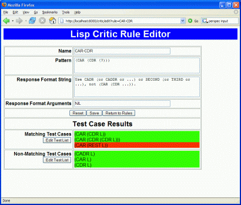

These exercises all involve use of the web, i.e., HTTP and/or HTML. They assume you have AllegroServe or Portable AllegroServe.
Different exercises emphasize different Lisp skills. Some exercises can be done independently, others form a sequence.
Submit your entire code for this exercise as one submission. Run the Lisp Critic on your code before sending.
A common problem with code libraries is keeping them up to date. One solution is to have an update function that uses the web to check for and download new versions of files. Two examples of this are Windows Update for Windows, and Web Start for Java applications. In this exercise, you'll write a file updater for Lisp.
Define a function (update-file file dir url) that compares file in the local directory dir against the version at url. If there is no such file in dir, or the file at url is newer, it should ask you if you want to download the version at url. If you say yes, it should copy the content of the version at url to the local directory dir.
Example:
(update-file "exercise-tests.lisp" "c:/cs/cs325/code/" "http://www.cs.northwestern.edu/academics/courses/325/programs/")
will replace
c:/cs/cs325/code/exercise-tests.lisp
with the contents of
http://www.cs.northwestern.edu/academics/courses/325/programs/exercise-tests.lisp
if it is newer.
To do this, you need to learn how to:
Graham doesn't have a chapter on Lisp's file functions, but they're all described briefly in the glossary, pp 371 - 379. Full details are in Chapters 19 - 21 of the Common Lisp HyperSpec™.
To get both the contents of a URL and information about the file that
contains that content, use
AllegroServe's do-http-request function.
You can get modification
information without getting the entire file first,
using the HTTP head
method instead of the default get:
(net.aserve.client:do-http-request url :method :head)
See the AServe documentation and play with some examples in the Listener.
To parse the date-time string you get from the web server, don't reinvent the wheel and write your own parser. Use the date-time parser in date.lisp in the the CLOCC Library. (This is the library that has the XML parser we use.) Look at the functions exported by that file, and read the comments, to find a function that parses dates and times.
There are usually two ways that dates are represented in in programming language:
The integer format is the simplest to use for comparing two date-times, or for calculating the difference between two date-times. Details on the standard representations of time in Common Lisp are in the Hyperspec.
Test the function or functions you think you want to use from
date.lisp in a listener window, using the
date-time strings returned by the HTTP head method.
Make sure the function you pick does what you want.
Submit your entire code for this exercise as one submission. Include both define-path-handler and test-path-handler. Run the Lisp Critic on your code before sending.
When defining and publishing a function to respond to a URL, many of the same tasks occur over and over. For example, below is code for a web form that calls the Lisp Critic. I've underlined patterns of code that are commonly repeated:
(publish :path "/critic" :function 'critique-code)
(defun critique-code (req ent)
(with-http-response (req ent)
(with-http-body (req ent)
(make-critique-page (request-query-value "code" req)))))
(defun make-critique-page (text)
(html
(:html
...
((:textarea :name "code" :rows 5 :cols 60)
(unless (null text) (html (:princ text))))))
...
(unless (null text)
(html (:pre (:princ-safe (critique-code-string text)))))))
)))
(defun critique-code-string (s)
(let ((*read-eval* nil))
...
(critique-definition (read-from-string s)))
...))While none of this is all that complex, it is tedious,
and, in some cases, easy to get wrong, e.g., forgetting to
set *read-eval* to nil, or forgetting
to check for a request parameter value being null, before printing,
or an empty string, before reading.
On top of all this, you have to remember to define
subfunctions, such as make-critique-page, so that you can test
your code outside the context of responding to HTTP requests.
You need an extra function because an AllegroServe request
handler function needs a request and a response entity.
To test a request handler, you would need to create
both kinds of objects, and these normally are created only by a
web server responding to a web client.
What follows is one of many similar approaches for making web pages more testable and easier to define. Like all designs, it has strengths and weaknesses. If you think you have a better macro design, submit some examples of using the macro for approval. Once approved, implement your idea.
A better way is to define
define-path-handler for defining web page code
more simplytest-path-handler for testing web page code
without needing to run the web serverI use the term path handler to distinguish these from AllegroServe's request handler functions that require request and response entities.
Here's an example use to define-path-handler:
(define-path-handler "/critic" (code)
(html
(:html
...
((:textarea :name "code" :rows 5 :cols 60)
(when (text) (html (:princ (text :string))))))))
...
(when (text)
(html (:pre (:princ-safe (critique-code-string (text :string))))))))
)))In general, define-path-handler takes
publishdefine-path-handler expands into code that
calls publish with
the given path, e.g., /critic, and the body, wrapped inside
the standard (with-http-response ... (with-http-body ...))
forms.
In addition, the handler is stored so that it can be
easily tested with test-path-handler.
test-path-handler
*HTML-STREAM*For example, we could test our Lisp Critic with:
> (test-path-handler "/critic"
'(("code" . "(defun foo (x) (setq x (+ x 1)))")))
"<html><head><title>Lisp Critic</title>..."
Inside the body of a path handler, the parameter accessors
listed, e.g., code, are bound to locally defined
functions that scan the association list returned
by request-query for entries whose
key, i.e., CAR,
is STRING-EQUAL to the symbol's name.
Parameter accessor functions take one argument, a keyword, for specifying in what form you want the parameter value:
(accessor :string) returns the first
non-empty string value, or the empty string if there is none(accessor :strings) returns a list of the non-empty string values for all
matching entries(accessor :value) returns the result of safely reading
one value from the first non-empty string value(accessor :values) returns a list of the results of safely reading
all values from the non-empty string values for all matching entriesThe term safely reading means that
*READ-EVAL* set to NILSubmit your entire code for this exercise as one submission. Include the test XML-RPC calls and results for both your Lisp client and whatever other client you used. Run the Lisp Critic on your code before sending.
Set up at least 3 potentially useful Lisp-based XML-RPC services, using the S-XML-RPC library. Do this only after you've read my notes on S-XML-RPC and have installed and tested that library.
Lisp is unusual in providing, through FORMAT
directives, the ability to format integers in
Define an XML-RPC method lisp.formatNumber that takes two arguments:
and returns a string formatted accordingly.
Define an XML-RPC method critic.critique that takes one argument,
a string containing Lisp code, e.g., "(defun foo (x) (setq x (+ x 1)))",
and returns a string (possibly empty) of Lisp critiques, as returned
by the Lisp Critic.
Define an XML-RPC method of your choice. Like the above examples, a good XML-RPC service is one that:
Implementing a service is relatively simple. You just need to define
a function in the s-xml-rpc-exports package, like this:
(defun s-xml-rpc-exports::|lisp.formatNumber| (...) ...)
The vertical bars force Lisp to preserve the camelcase function name, because that's the way XML-RPC methods are commonly named. Other than naming, an XML-RPC method is a normal Lisp function. The parameters should be kept simple, i.e., numbers, strings, and simple lists and structures, because of that's what the XML-RPC protocol allows. Similarly, the function should return either a number, string, simple list, or structure.
"Structure" here means an XML-RPC structure,
which is a list of name-value pairs. In S-XML-RPC client code
in Lisp, you create an XML-RPC structure with
(s-xml-rpc:xml-rpc-struct key value key value ...).
In XML-RPC server code in Lisp, you get at parts of an XML-RPC
structure with
(s-xml-rpc:get-xml-rpc-struct-member struct key).
Test this code by starting the server, using
(setq *xml-server* (start-xml-rpc-server :port 8080))
We store the name of the server in *xml-server* so
that we can easily stop it later.
Then call your three XML-RPC methods, with different arguments, with at least two different clients. One client should be Lisp, e.g.,
> (xml-rpc-call (encode-xml-rpc-call "lisp.formatNumber" "roman" 1574) :port 8080) "MDLXXIV"
If no :host argument is given, XML-RPC-CALL assumes localhost.
The other client can be anything you want, e.g., Perl, Python, C++, Java, etc. A number of examples in various languages is given at the XML-RPC How To site, and there is also a long list of implementations of XML-RPC.
If you want to use Python or Java, see my XML RPC testing notes. In that case, an example Java call to test the format code might be:
java -jar xml-rpc-test.jar http://localhost:8080/RPC2 lisp.formatNumber roman 1574
MDLXXIVWhen you're done, for safety, be sure to stop the XML-RPC server, with
(stop-server *xml-server*)
Submit your entire code for this exercise as one submission. Run the Lisp Critic on your code before sending.
Fairly simple HTML and CSS can be used to make a very nice web-based interface for browsing knowledge bases. For example, here's a browsing interface I've built for the Lisp Critic's rule base:
This and other screen shots are to clarify what needs to be built. Feel free to do something you think it would be better. If, however, you have a drastically different interface design in mind, get it approved first by submitting a description of it, with a Subject line such as Proposed Rule Editor Interface.
Using AServe and
the HTML generator macro,
create a dynamic web page
that displays the names and response format strings for all of
the critiquing rules in the Lisp Critic, similar to the output shown
in the example image. Use the function get-pattern-names
in the Lisp Critic package to get the set of Lisp rule names.
Submit your entire code for this exercise as one submission. Run the Lisp Critic on your code before sending.
It would be nice to have a web-based editor for creating and modifying the rules in the Lisp Critic. This would allow users to edit the knowledge base at any time from any place. We'd probably want some form of login to control who can do this, but we won't do that in these exercises.
A good way to design real software is to start with use cases. Even simple systems will usually have at least half a dozen use cases. We'll pick just one here:
A use case describes functionality not interface or implementation. There are many ways to implement the above use case. I have built my own solution to this problem. To do the first step, where users select a rule to edit, I made a small change to the Rule Browser so that the rule names became links that, when clicked on, opened a Rule Editor page with that rule's data. The new Rule Browser page looks like this:
Clicking on any rule name takes you to a page for editing that rule that looks like this:
The user can change the text in one or more fields of the form.
When the user clicks , the rule
in memory is updated with the modified fields. (I used
the add-lisp-pattern
function in the lisp-critic package. Note that if the
user changes the name, then I also have to remove the old rule,
using remove-lisp-pattern.)
The user can test her changes, after saving the changes, by clicking the button to go to the Lisp Critic web page (as defined by test-aserve.lisp), and trying some examples. (The next exercise is about a much better way to test changes.)
Note: making rule names into links is not very hard. For example,
in my sample solution, here's the HTML my Lisp code generates
for the CAR-CDR table entry:
<tr> <th><a href="/critic/edit?rule=CAR-CDR">CAR-CDR</a></th> <td>Use CADR ...</td> </tr>
I use AServe to map the URL /critic/edit to a Lisp function that generates
the rule editing page, and that page uses the value of the rule
request parameter to determine what rule to show.
Submit your code for with-request-parameters as one submission. Include at least one example of real usage of this macro. One good place to use this macro is when defining your Rule Editor function. Run the Lisp Critic on your code before sending.
While it's easy to get a single request parameter
with request-query-value and put it in a local variable,
things quickly become tedious if you have to get four or five such values,
and convert all or most of the string values
to Lisp numbers, symbols or lists.
This is where a macro can make code much more readable and maintainable. There are many possible macro designs. The one given here is fairly simple yet flexible. Define
(with-request-parameters (var-spec1 var-spec2 ...)
request
exp1
exp2
...)
to expand into code that evaluates the expressions, with local variables bound to values from request, as specified by the var-spec's. A var-spec can be either a list of the form ( name function [ default-value ]), or a simple name, which is equivalent to the list (name safe-read).
Submit all your new code for this exercise as one submission. Put your test cases first, followed by the code you added or changed to run the test cases. Don't send code that was unchanged, or modified in only minor ways. Run the Lisp Critic on your code before sending.
Manually testing changes to rules using the Lisp Critic is both tedious and unlikely to be very complete. A much better way is to maintain a database of examples for each rule and re-test the rule against that database whenever the rule is changed.
With any kind of pattern-based rules, we need two kinds of examples: positive cases that the rules should match, and negative cases that the rules should not match.
For this exercise, create a small file with positive and negative test cases for two or three rules, represented in some simple form of your design. Load this file into your Lisp.
Define a function
(rule-ok-p name)
that returns true if and only if the rule named
matches all its positive test cases, and none of its
negative test cases. Use apply-critique-rule
in the Lisp Critic package to see if a rule
matches a piece of code.
Change the Rule Editor page to display all the test cases in a readable way, with all the rules that fail clearly marked. This will make it easy for a user to see which cases are and are not working.
Change the Rule Browser page to similarly mark all rules that fail one or more of their test cases. This will make it easy for a user to see which rules have problems.
In my sample solution, I created several test cases for
the CAR-CDR rule, including one positive case that it does not
currently catch. Here's how I did show the test case results on my
Rule Editor page:

Here's how I changed my Rule Browser to show that CAR-CDR
is not passing all its test cases:
Submit all your new code for this exercise as one submission. Don't send code that was unchanged, or modified in only minor ways. Run the Lisp Critic on your code before sending.
Add a page for editing test cases. This means displaying the existing tests cases in a form, with a way to edit or delete any test, plus a way to add a new test.
Change your Rule Editor page to have buttons to let you edit the test cases for the rule being edited. Note that in my sample solution, I put separate buttons on positive and negative test cases, but this is not a requirement. It may not even be a good idea!
Submit all your new code for this exercise as one submission. Don't send code that was unchanged, or modified in only minor ways. Run the Lisp Critic on your code before sending.
Right now, all of the changes your editor makes are only changes to the rules and test cases in memory. When you exit your Lisp code, all your changes are lost. To make the changes permanent, the changes need to be saved to a file.
Add a
button to both the Rule Browser and Rule Editor. Clicking this
button should cause your Lisp code to write both the rules
and the test cases out to whatever file they were loaded from.
The rules should be written in one file,
using define-lisp-pattern
forms. The test cases should be written in a separate file,
using whatever Lisp form you feel is appropriate.
Because it's quite likely you're going to make mistakes writing files, always keep a backup copy of your rules and test cases files.
This is an "exercise-in-progress." The basic idea is to define a function that can convert OWL ontologies, such as the ones available at SchemaWeb, into machine-usable knowledge.
Specifically, define a function (read-kb-from-url url)
to return a list of assertions suitable for feeding to the
init-kb function in the Deductive Retriever.
Ontologies are mostly about class relationships and class restrictions on predicates, e.g., that the actor of a "tell" has to be some kind of intelligent agent. These relationships can be captured and used in the Deductive Retriever as backchaining rules. For example, to say that tree is a subclass of plant, we make tree and plant predicates, and say
(tell '(<- (plant ?x) (tree ?x))
Similarly, if we wanted to say that buyers are humans,
(tell '(<- (human ?x) (buy ?x ?y))
From these rules, if the system hears about someone buying a tree, it can infer that a human bought a plant.
Here's an example of possible output in this form for one simple OWL ontology at SchemaWeb:
> (pprint (read-kb-from-url "http://pervasive.semanticweb.org/ont/2004/01/agent")) ... harmless warnings about entities being redefined ... ((<- (AGENT ?X) (DESIRES ?X ?Y)) (<- (STATE-CONDITION ?Y) (DESIRES ?X ?Y)) (<- (AGENT ?X) (INTENDS ?X ?Y)) (<- (ACTION ?Y) (INTENDS ?X ?Y)) (<- (AGENT ?X) (BELIEVES ?X ?Y)) (<- (FACT ?Y) (BELIEVES ?X ?Y)) (<- (ACTION ?X) (OBJECT ?X ?Y)) (<- (TARGET-OBJECT ?Y) (OBJECT ?X ?Y)) (<- (ACTION ?X) (EFFECT ?X ?Y)) (<- (ACTION-EFFECT ?Y) (EFFECT ?X ?Y)) (<- (STATEMENT ?X) (FACT ?X)))
Make your code modular. Most of your functions should be very short and well-named and re-usable. The one annoyingly messy part is converting RDF strings into readable Lisp symbols, e.g., "ActionEffect" into action-effect, "#Agent" into agent, and "&rdfs;fact" into fact. One way to do this is to adapt Graham's buffer reading code, but that's not very pretty code.
Use net.aserve.client:do-http-request from Assignment 3 to access the URL, and the CLOCC XML parser from Assignment 4 to parse the XML.
Final warning: start simple. The agent ontology is pretty small and doesn't do any complicated. But full OWL (even OWL Lite) can have all kinds of nested relationships.
Comments?  Send mail to Chris
Riesbeck.
Send mail to Chris
Riesbeck.